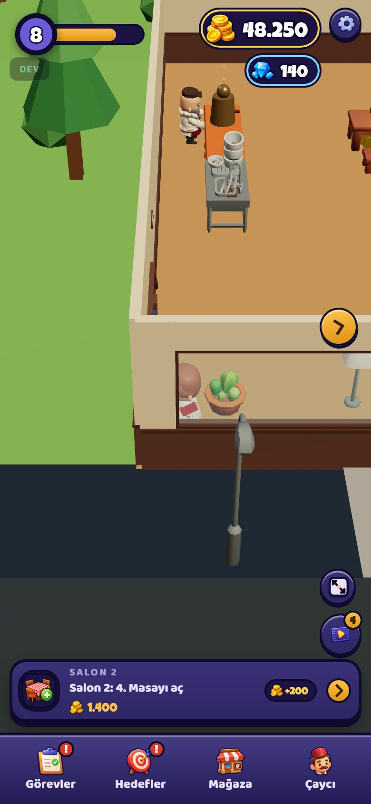
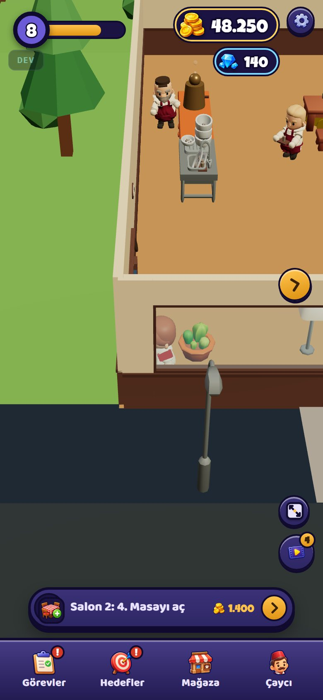
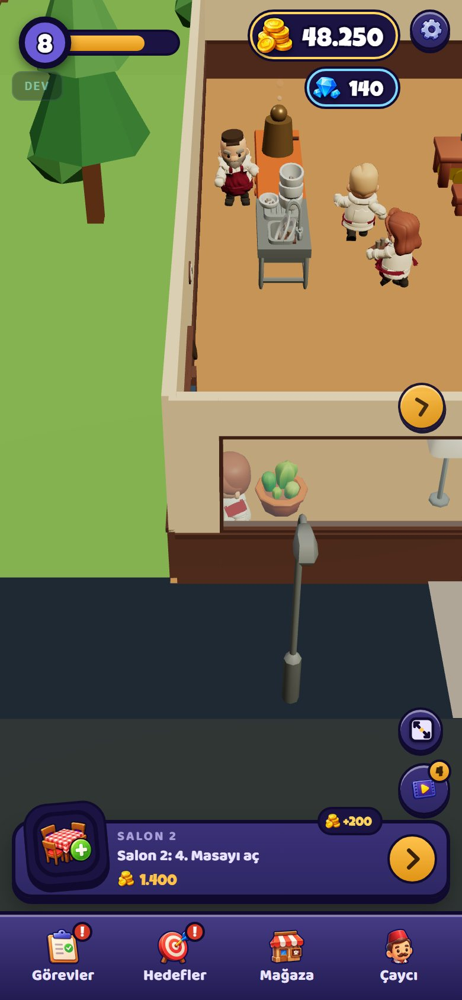
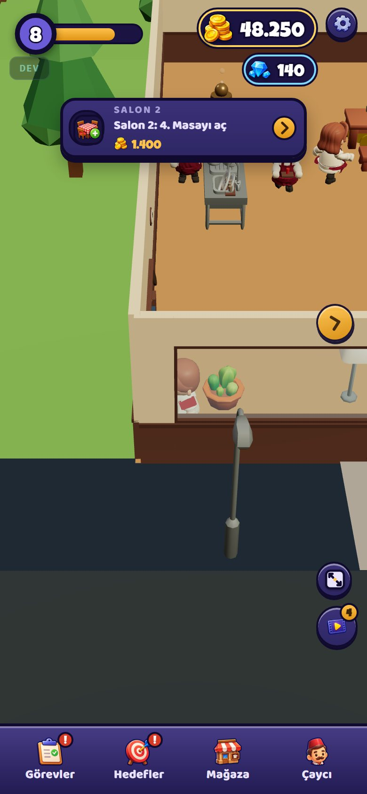
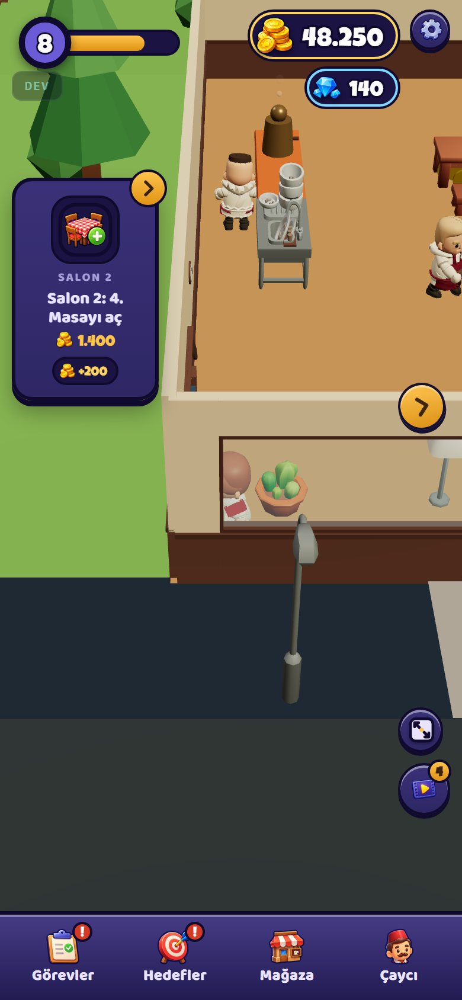
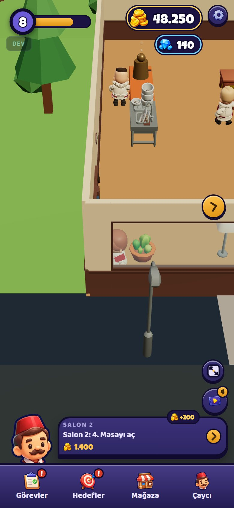
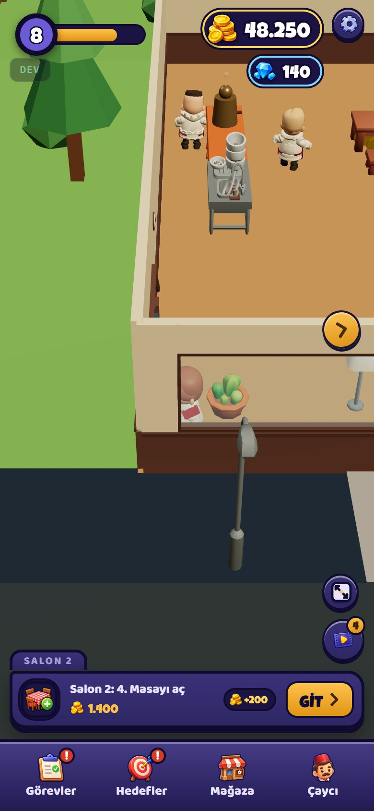
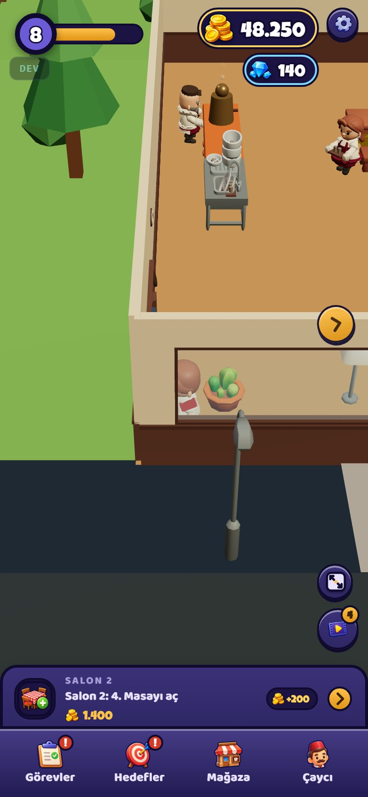
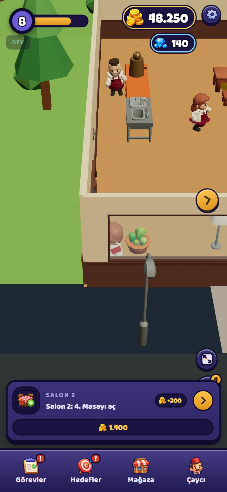
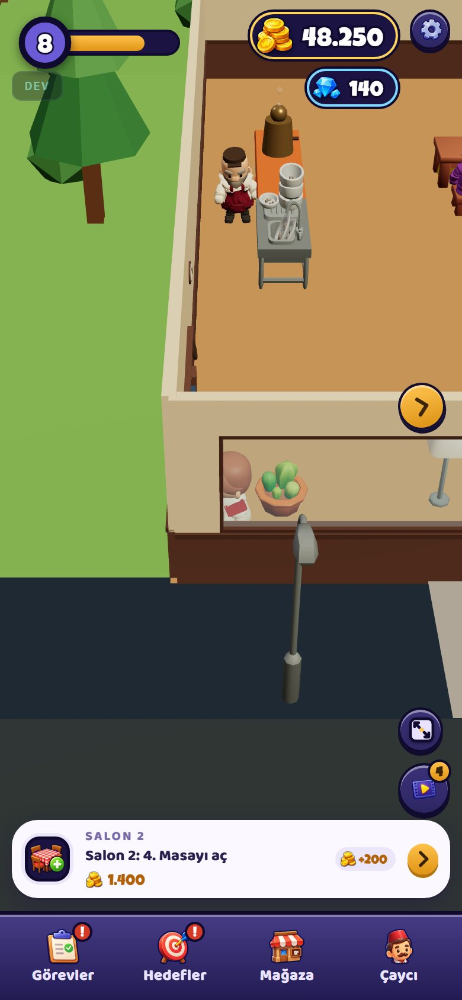

Hepsi oyunun kendisinden, aynı anda ve aynı kadrajda çekildi. Yalnız alttaki görev kartının biçimi değişiyor (yeri, şekli, bilgilerin dizilişi); renkler bugünkü gibi. Büyütmek için resme dokun.
Beğenmediklerini ele, kalanları sohbette yaz (ör. "C ve G kalsın"). İki adayın parçası da birleştirilebilir (ör. "G'nin sekmesi + C'nin ikonu").









